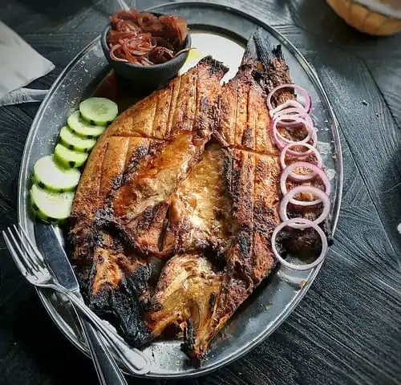
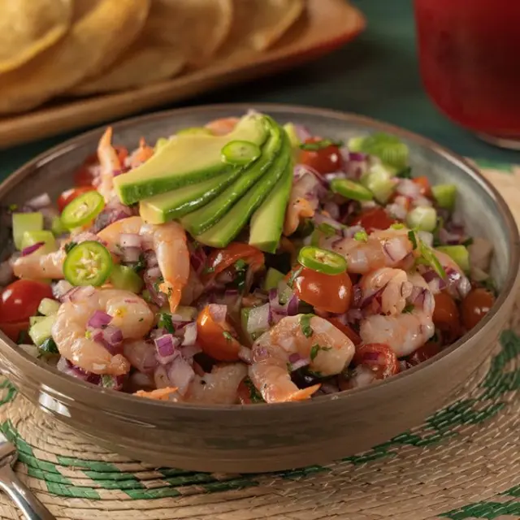
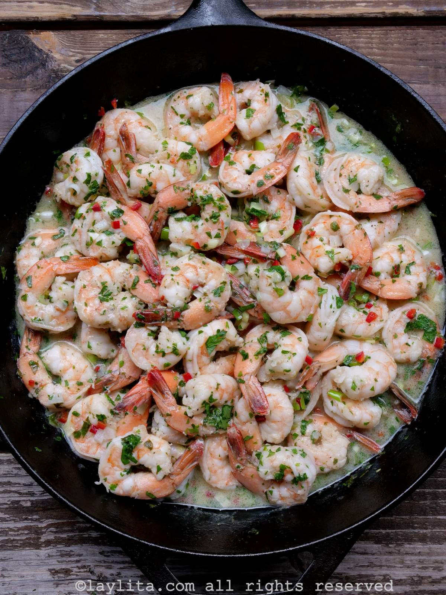
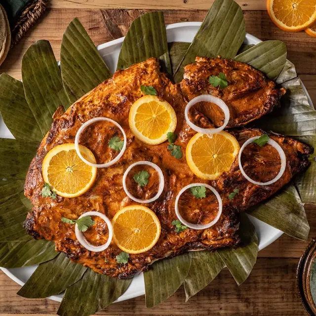
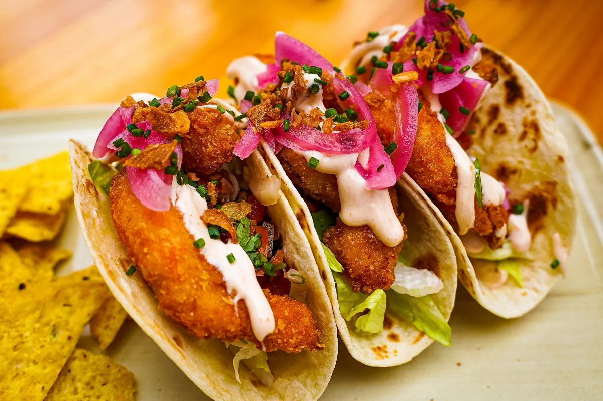
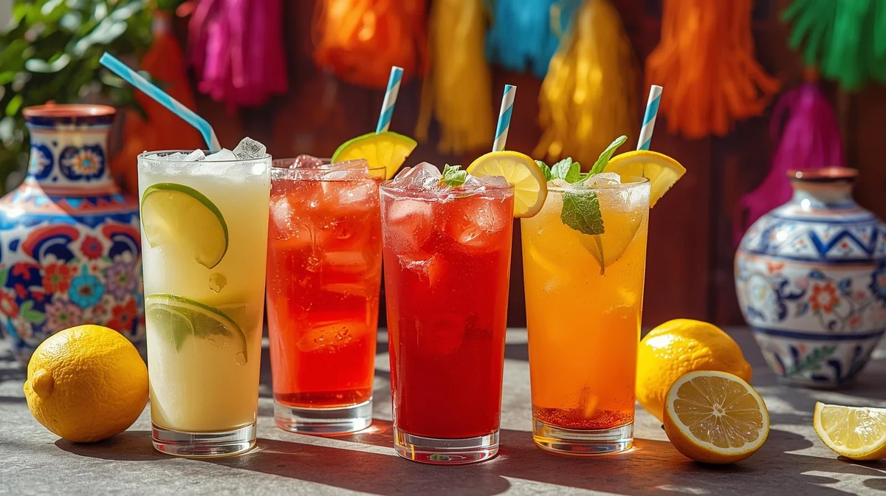

La gastronomía de Puerto Vallarta se caracteriza por la combinación de sabores tradicionales de Jalisco y productos frescos del mar. Gracias a su ubicación en la costa del Pacífico, ofrece una gran variedad de platillos elaborados con pescados, mariscos, frutas tropicales y condimentos regionales.
Pescado preparado a las brasas con una mezcla de especias y salsas.

Pescado o mariscos marinados con limón, jitomate, cebolla, cilantro y otros ingredientes.

Camarones cocinados con ajo y mantequilla, acompañados de arroz o verduras.

Pescado asado con una salsa condimentada que le da un sabor especial.

Tortillas rellenas de pescado, acompañadas de verduras y salsas.

Entre las bebidas se encuentran las aguas frescas de frutas tropicales, como mango, jamaica y limón.

La gastronomía de Puerto Vallarta ofrece una gran variedad de sabores que combinan productos del mar con ingredientes tradicionales de la región.